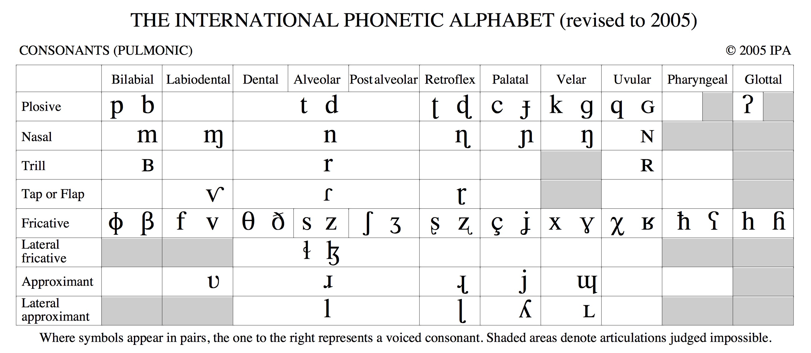
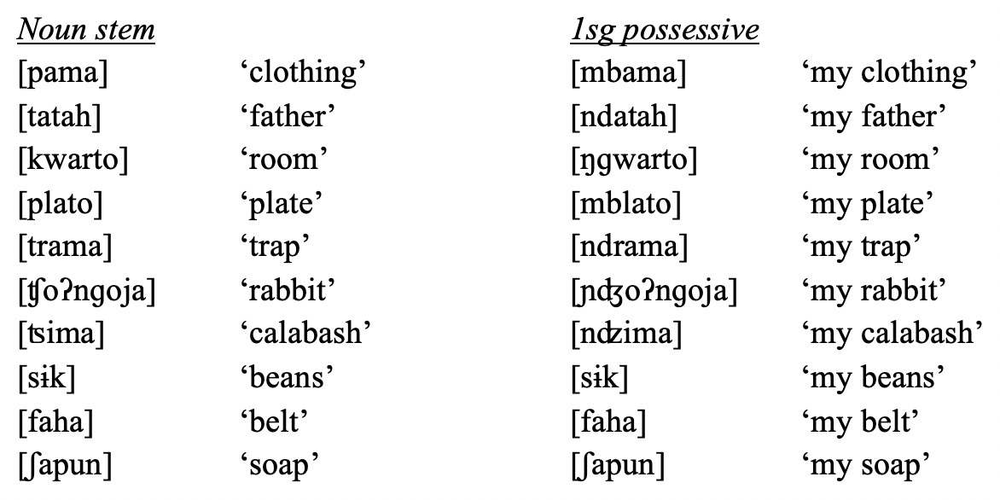

“This morpheme could look like X, Y or Z depending on the surrounding sounds”
Let’s do a bit of review on what this looks like
How do we write a phonological rule?
What’s the difference between phonology and morphology?
Why does Morphology need phonology?
What do you need to know from Phonetics/Phonology to do this class?
Common phonological processes in morphology
/Starting State/ -> [Ending State] / [When the transformation happens]
“X turns into Y in environment Z”
“X -> Y” means “X turns into Y”
Then the “/” which means “in the environment”
Then you add a blank, representing where the sound goes that’s getting transformed “__”
… And you position that blank relative to the conditioning environment.
Adding or removing sounds involves tranforming to or from ‘ø’

/n/ -> [ŋ] / __k
If it happened after [k]…
/n/ -> [ŋ] / k__
Rules don’t need to be stated using features
You will not be graded on the quality or elegance of your phonological argumentation
But if you’re explaining how an alternation works, a quick rule is a great way to do so
There are three realizations of the English Plural
dogs, pubs, rags, dads, bins…
cats, bucks, cliffs, myths
dishes, fishes, kisses, pluses, judges
ø -> [s] / [plural word] __
ø -> [z] / [plural word] [C +voice]__
ø -> [ɪz] / [plural word] [C +strident]__
If adding something changes the meaning of the word, it’s morphology’s problem
We don’t want to write phonological rules to account for morphological changes
Phonology handles sound changes in the fully-constructed word!
“First, we’ll choose our stem: /dɑg/”
“But we need this to be plural, so we’ll also need to add the /s/ suffix. This gives us /dɑg+s/”
“Then, we’ll apply our phonological rule, /s/ -> [z] / [C +voice]__”
“This gives us the final surface form, [dɑgz]”
See, that wasn’t so ruff!
(We’ll talk more about this process later, but this works for now)
The multiple forms which a given morpheme can take
“This single underlying morpheme could show up on the surface in one of several ways”
Phonology is regularly responsible.
“We’ll see one of these variants, depending on the phonological structure of the base.”
-s, -z, and -ɪz are the three allomorphs of the English plural
-t, -d, and -ɪd are the three allomorphs of the English past tense
These allomorphs are the surface result of the application of phonological rules!
There is one English plural suffix, but it has three wholly predictable allomorphs
Even if you can give us the rule(s) that create them, we’ll still want you to list the allomorphs!
Your life will be around 30% better in this class if you’ve already taken LIGN 111
Everything phonological we’ll do in this class will be easier than most of what we did in 111
Consonants vs. Vowels
Vowel height, backness, and rounding
Consonant place, manner, and voicing
You need to know how and why it’s organized
You want to have it close at hand


“Openness” of consonants and sonorance
“Coarticulation” leading to changes in surrounding sounds
“Naturalness” of phonological rules and processes
We can help in office hours
It’s a great idea to brush up on your IPA now
I can point you towards some books that might help
My slides for Phonology are still online
Common phonological problems will obscure your problems!
We should talk about those!
Proper
Regular
Legal
Glorious
Dependent
Formal
Variable
Expensive
“Take on (some of) the characteristics of a nearby sound”
Can be partial assimilation (‘match this feature’)
… or total assimilation (‘become the same sound’)
Nasals LOVE to assimilate!
Insert a sound to prevent an awkward combination of sounds
mod+d -> modded
Remove a sound to prevent an awkward combination of sounds
in+relevant -> irrelevant
Palatal sounds often make other sounds palatal
tree -> ‘chree’
|
‘non-actual’ |
‘actual’ |
|
|---|---|---|
| qq’í | qíq’ |
‘restrain’ |
| pk ∑‚Äô…ôÃÅ | p…ôÃÅk ∑‚Äô |
‘smoke’ |
| t’cə́ | t’ə́c | ‘shatter’ |
| k ∑‚Äôs…ôÃÅ | k ∑‚Äô…ôÃÅs | ‚Äòcount‚Äô |
(from Klallam, a Salish language of Vancouver)
Fortition: Making a consonant stronger (i.e. more closed)
Lenition: Making a consonant weaker (i.e. more open)
Where a feature from one segment spreads through the word
Often occurs with vowel features (e.g. Turkish, Finnish, Yokuts)
Can occur with nasality too (usually near Uruguay!)
This isn’t a phonological process, but a result
When a phonological rule removes a contrast
“This morpheme doesn’t seem to get attached here”

Sometimes, the morpheme isn’t attached for lexical reasons
Cat -> Cats
Deer -> Deer
Elk -> Elk
Mouse -> Mice
Phonology and Morphology have different goals
Morphology needs to ‘look past’ phonology
You want to make sure you’ve got phonological basics for this class
Understanding common phonological processes will help!
Get a jump on the next discussion post
We’ll give some tips for morphological analysis!